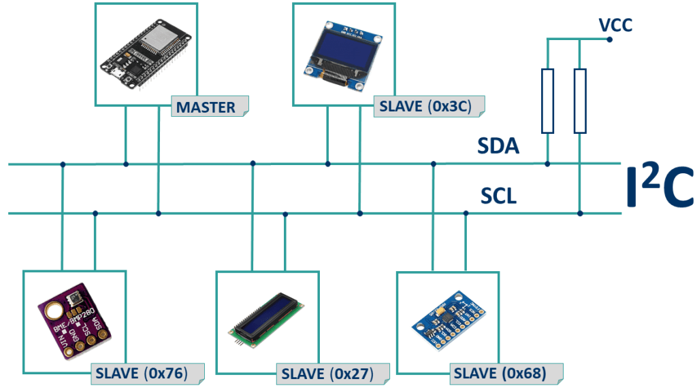
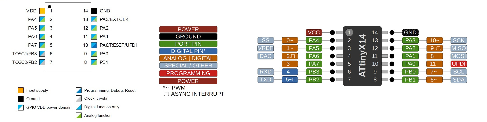
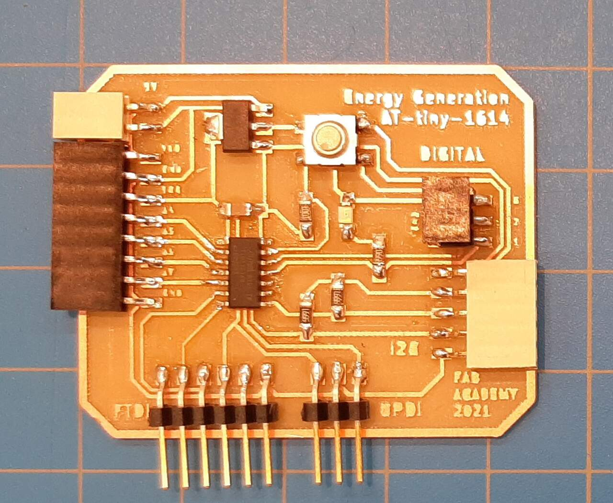
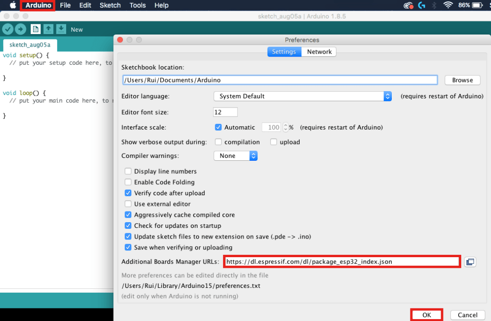

The assignment for this week was to build a second board and communicate between two boards using some sort of networking protocol. For this assignment I chose to use the I2C networking protocol. Details regarding the requierements for this weeks assignment are below.
Group assignment:
- Send a message between two projects
Individual assignment:
- Design, build, and connect wired or wireless node(s) with network or bus addresses
Learning outcomes:
- Demonstrate workflows used in network design
- Implement and interpret networking protocols and/or communication protocols
- Document your project
- Document what you have learned from implementing networking and/or communication protocols.
- Explain the programming process/es you used.
- Outline problems and how you fixed them.
- Include design files (or linked to where they are located if you are using a board you have designed and fabricated earlier) and original code.
Group Assignment
As I am the only student at my lab for the group assignment I simply sent a message between the two boards that will be used for my project.
Individual Assignment
For the individual assignment we were tasked with designing, building, and connecting wired or wireless node(s) with network or bus addresses. For this week I chose to take the opportunity to deign the board I will need for my final project. I spent most of the week doind this but was not able to finish completely so I opted to make a second copy of my version of the Adrianino and write the code for the I2C protocol for that and then use that code to program my final project. The design for my final project board is detailed on my final project page.
To continue, I developed the following workflow used for the network design.
Workflow
- Choose the networking protocol you plan to use and learn about it
- Connect your boards together
- Program your Master board
- Program your Secondary board
- Run your programs and observe the communication between microcontrollers
- Debug as necessary
1. Choose the networking protocol you plan to use and learn about it
A good reference to overview all of the networking protocols that exist check out the fab academy networking week page. You can find the page using the following link.
For this assignment I chose to use the I2C protocol. To begin I started with learning about the I2C protocol, how to conect it between two microcontrollers, and how to program them you can see the following tutorials:
Connecting two microcontrollers using the I2C protocol
To connect I2C protocol you must connect between the SDA and SCL pins between the two chips with a 4.99 kOhm pull up resistor between those and the VCC line as shown in the following diagram.
For this assignment I was using two copies of the Adrianino based boards I developed in Assignment 7 - Electronics design which is based on the AT-tiny-1614 chip. With this chip the SCL and SDA lines are at pins 7 and 8 based on the pinout.
The Chip I designed has pull-up resistors integrated into it as shown in the trace diagram below.

The two boards were connected using jumper cables connected to the 12C pinouts on the boards.
Now that we have discussed how to connect two boards for the I2C protocol lets discuss how to program.
Programming two microcontrollers using the I2C protocol
To learn how to program the two controllers using I2C protocol it is important to understand the concept of a Master and Secondary board the “< Wire.h >” library, and how to open a communication between the two. The following video demonstrates how to program I2C communications between two Arduinos. I used this as the basis for the programs I wrote for this assignment.
There is another good tutorial on the I2C protocol, specifically for the ESP32 board which I plan to use for my final projet at this link here:
2. Connect your boards together
As discussed in the previous section I connected my two boards together using jumper cables between the two. The connection is shown in the video below.
3. Program your master board
To use the I2C protocol you need to call the Wire.h library and define the address of the secondary board (SECOND_ADDR 9).
You next need to initialize the Wire library using the Wire.begin() command in the void setup().
You then need to initialize a transmission to the secondary using the commands:
Wire.beginTransmission(SECCOND_ADDR);
Wire.Write(Variable);
Wire.endTransmission;
Inside the void loop. Also note that the value that is passed during the transmission is a value between 1 and 255 so you need to map your variales to that. The code for the master board is shown below.
#include <Wire.h> // Includes the I2C library
#define SECOND_ADDR 9 //defines the address of the secondary board
//DECLARING CONSTANT VARIABLES AND PINS
const float Vratio = 5.128; //ratio of voltage reduction based on experiment
const float VCC = 5.04; // value of VCC of the board based on measurements
const int VoltPin = 0; // pin where voltage sensor is connected
int Voltbits; // Name of variable that will be passed to secondary board
void setup() {
// put your setup code here, to run once:
//Start serial monitor
Serial.begin(9600);
//Initialize I2C communications on Master
Wire.begin();
//DefinePins
pinMode(VoltPin, INPUT);
}
void loop() {
//Read the voltage from the volt sensor
int Volts = analogRead(VoltPin);
//Map the voltage to a value that can be sent via I2C
Voltbits = map(Volts,0,1023,1,255);
//Write and charter to the secondary
Wire.beginTransmission(SECOND_ADDR);
Wire.write(Voltbits);
Wire.endTransmission();
//GET AND PRINT VOLTAGE
//calculate voltage and convert from bit reading to voltage value in volts
float Voltage = VCC*Volts*Vratio/1023;
Serial.print("Voltage = ");
Serial.println(Voltage);
Serial.print(" V ");
delay(500);
}
4. Program your secondary board
On the secondary board you need to again include the Wire.h library and define the board’s address (SECOND_ADDR 9). Again you want to initialize the communication but tell the microcontroller that you it will be a secondary by adding the name of its address Wire.begin(SECOND_ADDR).
The thing that is different for programming a secondary board is you have to define a “receiveEvent” function and call it using the command Wire.onReceive(receiveEvent).
In the receiveEvent funciton you need to read the value from the command using the wire.read() command.
The code for the secondary board is shown below.
#include <TM1637Display.h> //Includes the LED display library
#include <Wire.h> //Includes the I2C library
#define SECOND_ADDR 9 //Defines secondary board Address as 9
const int CLKV = 0; // clock for voltage (V) readout LED display
const int DIOV = 1; // DIO for voltage (V) readout LED display
const float Vratio = 5.128; //ratio of voltage reduction based on experiment
const float VCC = 5.04; // value of VCC of the board based on measurements
int Voltbits; // Variable to hold bits received from I2C
int LED = 8; //Set LED pin to 8
int BR; //Declare Blink Rate variable
//SET UP LED DISPLAYS
TM1637Display display = TM1637Display(CLKV,DIOV);
void setup() {
//Start serial monitor
Serial.begin(9600);
//Initialize I2C communications as secondary
Wire.begin(SECOND_ADDR);
//Initialize name of function that will receive from master
Wire.onReceive(receiveEvent);
pinMode(LED, OUTPUT);
}
void receiveEvent(){ //Defining the function that receives the date from the master
Voltbits = Wire.read();
//GET AND PRINT VOLTAGE
//calculate voltage and convert from bit reading to voltage value in volts
}
void loop() {
float Voltage = VCC*Voltbits*Vratio/255;
Serial.println(Voltage);
int BR = map(Voltbits, 1, 255, 1000, 10);
digitalWrite(LED,HIGH);
delay(BR);
digitalWrite(LED,LOW);
delay(BR);
}
5. Run your programs and observe the communication between microcontrollers
The programs that I wrote were designed such that the voltage would be read on the master and sent to the secondary. The secondary would then blink its LED at a rate proportional to the voltage. In other words, the larger the voltage reading on the master board, the blink rate would be faster.
Below is a video showing the voltage being passed from one board to the other.
The next video shows the secondary board blink rate increasing as a function of the voltage
6. Debug as necessary
Luckily with this week there was little to no debugging necessary.
Files
Below are the arduino files:
Reference links
http://fabacademy.org/archives/2015/doc/projects/satshakit/satshakit.html
wifi module documentation
https://www.lab4iot.com/2019/07/14/tutorial-on-how-to-program-the-esp32-wroom-32-or-esp32f/
https://www.dropbox.com/sh/p2g8i04gzawxuft/AABiHuok2cweNkGpxqihc_uwa?dl=0
https://wiki.keyestudio.com/KS0413_keyestudio_ESP32_Core_Board
http://academy.cba.mit.edu/classes/networking_communications/ESP32/esp32_datasheet_en.pdf
http://academy.cba.mit.edu/classes/networking_communications/ESP32/esp32-wroom-32_datasheet_en.pdf
Amazing tutorials on how to use the ESP32 board
https://randomnerdtutorials.com/esp32-ds18b20-temperature-arduino-ide/
https://randomnerdtutorials.com/esp32-hall-effect-sensor/
THE GOLD MINE
https://randomnerdtutorials.com/esp32-ssd1306-oled-display-arduino-ide/
Installing ESP32 board manager
- Installing the ESP32 Board To install the ESP32 board in your Arduino IDE, follow these next instructions:
-
Open the preferences window from the Arduino IDE. Go to Arduino > Preferences
-
Enter https://dl.espressif.com/dl/package_esp32_index.json into the “Additional Board Manager URLs” field as shown in the figure below. Then, click the “OK” button:
Note: if you already have the ESP8266 boards URL, you can separate the URLs with a comma as follows:
https://dl.espressif.com/dl/package_esp32_index.json, http://arduino.esp8266.com/stable/package_esp8266com_index.json
- Open boards manager. Go to Tools > Board > Boards Manager…
- Search for ESP32 and press install button for the “ESP32 by Espressif Systems“:
Tutorial on how to create bar graph webpage with ESP32
https://randomnerdtutorials.com/esp32-esp8266-plot-chart-web-server/
Tutorial on how to install the SPIFF addon to Arduino IDE
https://randomnerdtutorials.com/esp32-esp8266-plot-chart-web-server/
kiCad tutorial
Digikey Kicad Tutorial playlist: https://www.youtube.com/watch?v=ZHH4G_EWhm0&list=PLEBQazB0HUyR24ckSZ5u05TZHV9khgA1O
Make a symbol: https://www.youtube.com/watch?v=c2niS9ZRBHo
Schematic Capture: https://www.youtube.com/watch?v=4Gtd7xY6zS4&list=PLEBQazB0HUyR24ckSZ5u05TZHV9khgA1O&index=3
Make a footprint: https://www.youtube.com/watch?v=ZHH4G_EWhm0&list=PLEBQazB0HUyR24ckSZ5u05TZHV9khgA1O&index=4
Charge Controller
Tutorial video: https://www.youtube.com/watch?v=fUYt0dQnkZc
https://www.youtube.com/watch?v=Qw4psECqpwI
THE ONEAdding the mosfet and shroder diode https://www.youtube.com/watch?v=T70mBHeIOZA